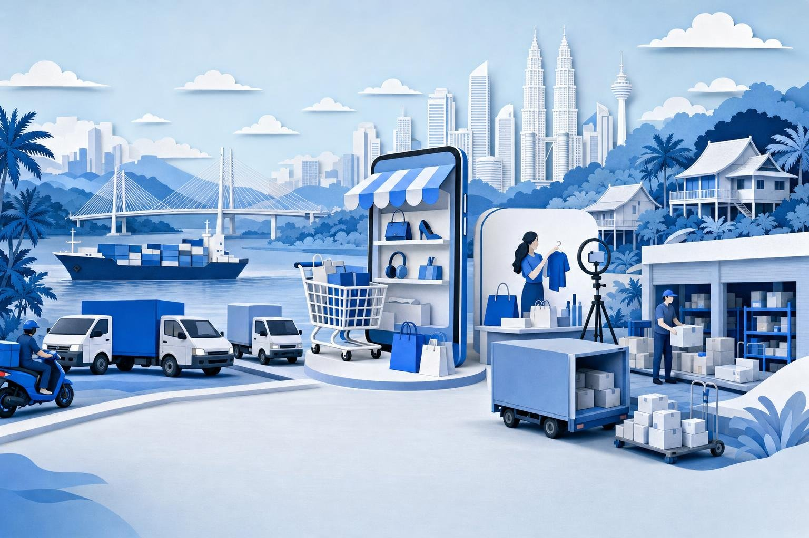

市場スキャン
マレーシア ECマーケットプレイス市場概観
オンライン購買の成長を牽引しているのは、新規購入者か、それとも客単価の拡大か。
2026
Know first.
Move first.
Move first.

オンライン購買の成長を牽引しているのは、新規購入者か、それとも客単価の拡大か。
本分析は2つのエビデンス系統に基づいています。アナリスト調査（英語・マレー語・中国語によるデスクリサーチ、プラットフォームおよび規制当局の開示資料、アナリストによる統合）と、二次情報アンカー（公的統計、公表済みの地域データセットおよび消費者調査、三角測量による推計）です。すべての定量的記述には明示的な出典タグを付しています。
論点：オンライン消費額は2025年に21%増加した一方、オンラインで購買するマレーシア人の比率は頭打ちとなっています。次の成長は、すでに購入者を抱えるプラットフォーム上での客単価拡大から生まれます。
5つの問いへの答えを一覧で示します。各行の根拠は後続の章で示します。
| 問い | エビデンスが示すこと | 日本・韓国の参入企業にとっての意味 |
|---|---|---|
| 市場規模と成長速度 | 2025年のGMVは約US$20 bn、+21%[eConomy 2025]。2023年のUS$13 bnから拡大[Edge Dec 2025] | 中規模市場であり、域内で2番目に成長が速い[eConomy 2025] |
| 収益の所在 | ファッション、電子機器、美容が牽引[HKTDC 2024]。課税対象の低額輸入品は約RM8 bnに達した[Kira estimates] | 美容、ライフスタイル、ホーム用品は外国ブランドに適する |
| 成長要因と2030年まで | 動画コマース、後払い、客単価。基本ケースで2030年にUS$30 bn（レンジ26-35）[Kira estimates] | 2025年の21%ではなく、年8-9%を前提に計画する |
| 主導する事業者 | GMVシェアはShopee約55%、TikTok Shop約28%、Lazada約6%[Kira estimates]。TikTok Shopの到達率は購入者の62%[Survey Jul 2026] | 2大プラットフォーム市場であり、Lazadaは特定領域のチャネル |
| 外国企業の勝ち筋 | 美容、ライフスタイル、ハラール食品のブランドストア。東マレーシアのフルフィルメントにおける支援サービス[Kira estimates] | プラットフォーム上で販売し、プラットフォームになろうとしない |
マレーシアでは複数の「Eコマース」統計が公表されていますが、それぞれ測定対象が異なり、直接比較すべきではありません。
当社は市場をオンライン物販額として推計しています。2025年は約RM83 bn（US$20 bn）で[eConomy 2025]、小売販売額の10分の1に相当します[Kira estimates]。
公式統計のRM375 bnは対象範囲が異なります。DOSMは旅行、サービス、自社サイトを含む企業のB2C Eコマース収入全体を2024年分として集計しています[DOSM Jun 2026]。
成長率も指標によって異なります。プラットフォームGMVは2025年に47.6%増加しましたが[MW 2026]、Eコマース全体は21%でした[eConomy 2025]。プラットフォームがブランドサイトやソーシャルチャット販売からシェアを奪ったためです。
オンライン購買の成長を牽引しているのは新規購入者か、客単価か。2025年までは主に新規購入者、今後は主に客単価です。
2025年は購入者の年でした。購入者は16%増加し[Survey Nov 2025]、GMV成長率21%に近い水準でした[eConomy 2025]。
2026年は客単価の年です。オンラインで購入する成人の比率は前年の62%に対し60%にとどまり[Survey Jul 2026]、インターネット利用率は98%に達しています[DataReportal 2026]。
支出の深さではなく購買の広がりを示します。調査はカテゴリー別の購入者比率を数えたもので、支出データではファッションが1位、電子機器が2位です。
支出額ではファッションが最大、電子機器が2位です[Statista 2025]。2025年の購入者増加はファッションとホームケアが牽引しました[Survey Nov 2025]。
輸入美容品には吸引力があります。韓国のスキンケアブランドは、LazMall上のGmarket旗艦店を通じてマレーシアの購入者に届いています[Jing Daily 2025]。
決済習慣が客単価を形づくります。分割払いは購入単価を引き上げ、後払い商品を持つプラットフォームが決済画面を握ります。
後払いは若年層の習慣です。平均購入単価はRM91で、利用者の約40%が30歳以下です[Parliament 2025]。アクティブ口座数は6ヶ月で510万から650万に増加しました[RinggitPlus 2026]。
3社が市場を支配しています。Shopee、Grab、Atomeが後払い取引の約97%を扱っています[HitPay 2025]。
決済はすでにデジタル化しています。電子決済は2025年に1人当たり538件に達し、DuitNow QRは倍増の30億件となりました[BNM 2026]。
市場は1つの国に2つの配送システムが併存しています。クランバレーは翌日配送、東部は費用が高く日数もかかります。
サバ州とサラワク州には居住者の約5分の1が住んでいます[DOSM Pop 2025] [Kira estimates]。ただし荷物はコタキナバルやクチン経由となり、通関手続きが必要な場合もあります[Retailer rates 2026]。
現地在庫がコストを下げます。コタキナバルとクチンのフルフィルメント拠点により、配送コストは約20%低減します[Sun Sep 2025]。
中核はセランゴール州です。クアラルンプールと合わせて最も配送密度の高い地域であり、最初の拠点として自然な選択です[Kira estimates]。
10%の低額物品税は、海外からオンライン販売される低価格輸入品を把握できる数少ない公式データです。
本税は2024年1月1日から適用されています。対象は海外から購入されたRM500以下の物品で、年間売上RM500,000超の販売者には登録義務があります[Skrine 2023]。
徴収額は72%増加し、2025年にRM817 mとなりました[MOF LVG 2026]。増加の一部は納税遵守の改善によるもので、実際の輸入増加率はこれより低いと見ています[Kira estimates]。
越境型の低価格プラットフォーム、たとえば2023年9月にマレーシアへ参入したTemu[MW 2023]は、この価格帯で最も激しく競争しています。
当社による2025年シェアの推計です。2大プラットフォームの下に、細く長い裾野が続く市場構造です。
TikTok Shop：2025年上期のマレーシアGMVは約US$2.7 bnで、150%増でした[MW H1 2025]。通年ではUS$5-6 bnと推計しています[Kira estimates]。
地域のアンカー：6市場合計で、2025年の3プラットフォームGMVに占めるシェアはShopee 59%、TikTok Shop 31%、Lazada 9%でした[Cube 2026]。
集中度：上位2社で約83%を占めます[Kira estimates]。地域全体では上位3社がプラットフォームGMVの98.8%超を握っています[MW 2026]。
オンラインで購買するマレーシア人の大半は、現在両方を利用しています。競争の焦点は購入者の獲得ではなく、買い物かごのシェアです。
商品発見は動画の中で起きています。ライブ販売とクリエイターが閲覧を購買に変えており、2026年のラマダン期の売上は130%超増加しました[Malay Mail Apr 2026]。
出店者支援：国内取引省と連携したRM180 mのパッケージにより、生活必需品の手数料を引き下げ、ライブ配信拠点を追加しました[Bernama Jun 2026]。
到達率では依然Shopeeが首位の71%で、ライブ、動画、65万人のアフィリエイトで対抗しています[Sun Jul 2025]。
ブランドにとっての売り場コストは、手数料＋広告費＋クリエイター報酬です。公表されているのは手数料のみで、それも変動し続けています。
| プラットフォーム | 出店者手数料の動き | 収益化のシグナル | ブランド出店者にとって |
|---|---|---|---|
| Shopee | 2025年7月16日からMall以外の出店者の手数料を引き上げ、2026年2月1日、5月21日、8月14日にも改定[Seller notices 2026] | 2025年第4四半期に広告収入+70%、広告料率+80 bp（グループ）[Sea Q4 2025] | 通行料は上昇中。広告が第2の手数料に |
| TikTok Shop | RM180 mのパッケージで生活必需品の手数料を引き下げ[Bernama Jun 2026] | クリエイター報酬とライブ費用が上乗せ | 出店者支援でシェアを獲得 |
| Lazada | 選定出店者には手数料なしのLazada Choiceモデル[SiteGiant 2025] | 2024年7月に初の月次EBITDA黒字[TechNode Aug 2024]、2026年6月に約5%の人員削減[NST Jun 2026] | 売り場は安いが、利用者は少ない |
| PGMall | 一律5%の取引手数料[Bernama Mar 2026] | 購入者300万人超、出店者約3万 | 低コスト・低到達 |
購入者から見た競争の場：検索型マーケットプレイス、動画コマース、越境低価格サイト、専門店、クイックコマース。
| 事業者 | モデル | 強み | 外国ブランドの参入ルート |
|---|---|---|---|
| Shopee | 検索型マーケットプレイス、Shopee Mall、自社配送（SPX） | 最大の到達範囲、物流、後払い | Shopee Mall経由の公式ストア |
| TikTok Shop | 動画・ライブコマース | 商品発見、クリエイター、高成長 | ブランドストアとアフィリエイトクリエイター |
| Lazada | マーケットプレイス、LazMall、越境ブランド | ブランドストアの実績、TmallとGmarketの商品供給[Yicai Apr 2026] [Jing Daily 2025] | LazMall旗艦店または越境 |
| Temu, Shein | 越境低価格 | 価格。海外から発送[MW 2023] | ブランド品のルートではない |
| Zalora, PGMall | ファッションEC、国内マーケットプレイス | 厳選されたファッション、低手数料[Bernama Mar 2026] | ファッションの副次的な売り場 |
| GrabMart, pandamart, Shopee Instant Mart, myAEON2go | クイックコマース・食品 | クランバレーでの配送速度[Ken 2026] [Cube 2026] [AEON 2025] | 食品・パーソナルケアの出品 |
各施策は同じ2つの空白を狙っています。現地拠点を持たない出店者による販売と、現地での法的責任を負わないプラットフォームです。
規制の議題を動かしているのは苦情です。2024年初頭、オンライン取引は国内取引分野の苦情の25%を占め[Sinar 2024]、通信規制当局は2025年1月以降1,964件のEコマース苦情を記録しています[NST Aug 2026]。
| 規制 | 状況 | 対象 | 外国ブランドにとっての意味 |
|---|---|---|---|
| 低額輸入品への10%売上税 | 2024年1月1日施行。2025年の徴収額はRM817 m[MOF LVG 2026] | 年間売上RM500,000超の海外販売者[Skrine 2023] | 直接輸入と現地在庫の価格差が縮小 |
| 消費者保護（電子取引）規則2024 | 2024年12月25日施行。罰金は最大RM100,000[Rödl 2025]。2025年6月24日から執行[Seller press 2025] | マルチベンダー型プラットフォームとその出店者 | 総額表示、出店者情報、配送期間の表示が必要 |
| マレー語での商品掲載義務 | 2025年6月に見直しのため一時停止[Malay Mail Jun 2025] | 主要プラットフォームの出店者 | マレー語の商品ページを準備。規則が復活する可能性 |
| プラットフォーム登録、SIRIM・ハラール検査 | 2026年8月の閣議指示。閉鎖は意図せず[NST Aug 2026] | 現地法人を持たないものを含むプラットフォーム | 電気・電子製品にはSIRIMマーク、ハラール表示にはマレーシアの認証が必要 |
| 新Eコマース法案、プラットフォーム免許制の可能性 | 2026年中に起草完了、次に影響評価[Malay Mail Sep 2026] | 全プラットフォーム | 掲載商品に対するプラットフォームの責任が拡大 |
| 電子インボイスの基準額をRM3 mに引き上げ | 2026年9月1日から[Malay Mail Aug 2026] | 売上RM3 m未満の企業は免除 | 新規参入者の初年度は基準額未満 |
促進要因は購入者1人当たり支出に、抑制要因は到達率、利益率、輸入に作用します。
| 区分 | 要因 | エビデンス | 強度 | 支出への影響 |
|---|---|---|---|---|
| 促進 | 動画・ライブコマース | TikTok Shopのオンライン購入者到達率62%[Survey Jul 2026] | 強 | 客単価と衝動買いを押し上げ |
| 促進 | 後払いと電子ウォレット | 2025年上期のBNPLはRM9.3 bn、+31%[Parliament 2025] | 強 | 購入単価を引き上げ |
| 促進 | 配送の迅速化とクイックコマース | 2025年の宅配市場はRM6.8-6.9 bn[Malay Mail Oct 2025] | 中 | 食品とリピート購買を開拓 |
| 促進 | オンライン出店する小規模事業者の増加 | 2024年までに243万の零細中小企業がオンライン販売[Edge Dec 2025] | 中 | 品揃え拡大、価格競争の激化 |
| 抑制 | 到達率の飽和 | インターネット利用率98%、購入者比率は60-62%で横ばい[DataReportal 2026] [Survey Jul 2026] | 強 | 新規購入者による追い風はない |
| 抑制 | 出店者コストの上昇 | Shopeeは13ヶ月で手数料を4回改定[Seller notices 2026] | 中 | 利益率を圧迫し、価格を押し上げ |
| 抑制 | 規制強化 | 登録、SIRIM・ハラール検査を命令[NST Aug 2026] | 中 | 低価格輸入品を抑制 |
| 抑制 | 与信の制約 | 後払いは2025年末時点で家計債務の約0.3%、規制は見直し中[Parliament 2025] | 低 | 与信が引き締まれば購入単価の伸びを制限 |
市場がもはや新規購入者に頼れないため、成長率は2025年の21%から1桁台後半に減速します。
購入者数：人口とインターネット利用の伸びに沿って年約1%[DataReportal 2026] [Kira estimates]。
購入者1人当たり支出：年4%（低位）、7%（基本）、11%（高位）。2025年は約4%でした[Kira estimates]。
検証：2030年にUS$29 bnとする公表予測[Edge Dec 2025]は、当社の基本ケースをわずかに下回る水準です。
選択肢とは、日本・韓国企業がマレーシアのオンライン小売で収益を上げ得る方法です。
| 選択肢 | 規模 | 成長性 | 空白 | 規制適合 | 能力 | 平均 |
|---|---|---|---|---|---|---|
| 美容・パーソナルケアストア | 5 | 4 | 3 | 4 | 5 | 4.2 |
| ファッション・ライフスタイルストア | 5 | 3 | 2 | 4 | 4 | 3.6 |
| ホーム用品・小型家電 | 4 | 3 | 3 | 3 | 4 | 3.4 |
| 加工食品・ハラール食品 | 3 | 4 | 3 | 3 | 3 | 3.2 |
| 越境直接販売 | 3 | 3 | 2 | 2 | 3 | 2.6 |
| 東マレーシアのフルフィルメント | 2 | 4 | 4 | 4 | 3 | 3.4 |
| 新規マーケットプレイス | 4 | 3 | 1 | 2 | 1 | 2.2 |
美容・パーソナルケアが首位です。購買の裾野が広く（オンライン購入者の61%[HKTDC 2024]）、日本・韓国ブランドへの吸引力が強く、後払いに適した低単価です。
新規マーケットプレイスは最低評価です。2つのプラットフォームがGMVの約83%を占め、3番手は縮小しています[Kira estimates] [NST Jun 2026]。
東マレーシアのフルフィルメントは余地のある特定領域です。配送コストに約4倍の格差があり、現地拠点も少数です[Retailer rates 2026] [Sun Sep 2025]。
魅力度＝規模、成長性、空白。能力＝日本・韓国企業にとってのブランド力と新規制への適合。
即参入：美容・パーソナルケア、ホーム用品、ファッションのストア。公式ストアとクリエイター経由で販売します。
オプション：東マレーシアのフルフィルメントとハラール食品は、まず現地パートナーまたは認証が必要です。
回避：新規マーケットプレイス。上位2社がすでに購入者の大半を押さえ、3番手は人員を削減しています[NST Jun 2026]。
現在の参入ルート：ブランドからマレーシア法人へ、支援事業者を介して公式ストアとクリエイターへ、そして2大配送業者を通じて購入者へ。
各条件について、現時点での当社の確度と、12ヶ月のパイロット内で決着をつける検証方法を示します。
| 条件 | 重要である理由 | 確度 | 検証方法 |
|---|---|---|---|
| プラットフォームの全控除後も貢献利益がプラスを維持する | 13ヶ月で手数料が4回改定[Seller notices 2026] | 中 | パイロット中にSKU別の四半期損益を管理し、損益分岐点を下回るSKUは停止 |
| クリエイターがブランドの購買転換を生む | TikTok Shopのオンライン購入者到達率62%[Survey Jul 2026] | 中 | 20-30件のクリエイター検証。注文当たりコストを広告と比較 |
| 出品前に製品がSIRIM・ハラール検査に合格する | 2026年8月に登録と検査を命令[NST Aug 2026] | 高 | 上位30 SKUの認証取得、食品・化粧品のハラール計画 |
| リピート購買が客単価を押し上げる | 成長源は客単価に移行[Survey Jul 2026] [Kira estimates] | 中 | 90日リピート率25%以上[Kira estimates] |
| 現地在庫で配送コストを抑える | 東マレーシアは約4倍のコスト[Retailer rates 2026] | 高 | クランバレー拠点。東部在庫は6ヶ月の注文実績後 |
| 免許制が売り場コストを押し上げない | 新法案を起草中[Malay Mail Sep 2026] | 低 | 草案を追跡し、代替として自社ECサイトを維持 |
オンライン参入を左右する観点で5つのルートを評価しました。評価は本レポートのエビデンスに基づく当社の判断です[Kira estimates]。
| 参入ルート | 到達範囲 | 収益化の速さ | リスク資本 | 利益率 | 規制適合 |
|---|---|---|---|---|---|
| 日本・韓国からの直送（越境ストア） | 既存ルート | 数週間 | 現地在庫なし | 10%輸入税の対象帯 | 現地拠点なし |
| ShopeeとTikTok Shopの公式ストア、現地在庫、支援事業者が運営 | GMVの83% | 3-6ヶ月 | US$1-1.5 mのパイロット | 手数料は上昇中 | 現地法人 |
| 自社の消費者直販サイト | シェア小 | 手数料なし | |||
| マーケットプレイスの立ち上げまたは買収 | 購入者は2社が保有 | 数年 | 巨額の損失 | 免許制が控える | |
| 支援事業者または東マレーシアのフルフィルメントへの投資 | B2B需要 | アセットライト |
ShopeeとTikTok Shopの公式ストアを主軸とし、クランバレーに在庫を置き、支援事業者に運営を委ねます。
ブランドサイトを維持し、ロイヤルティの確保と手数料上昇へのヘッジとします。
判断を変える要因：プラットフォーム手数料に上限を設ける、または現地法人を義務づける免許制法が成立すれば、直送はさらに不利になります。
8つのリスクを、2028年までの発生可能性と公式ストア参入への影響度で配置しました。深刻度はセルの濃淡で示しています[Kira estimates]。
4つのゲートにそれぞれ予算と検証を設定します。予算は中規模の美容・パーソナルケア製品群を想定し、認証、支援事業者への報酬、クリエイター、広告、初期在庫を含みます[Kira estimates]。
| ゲート | 実施内容 | 予算 | 期間 | 可否判断の基準 |
|---|---|---|---|---|
| G0 · 準備 | マレーシア法人または輸入業者の設立、支援事業者の選定、上位30 SKUのSIRIM・ハラール認証[NST Aug 2026] | US$0.2-0.4 m | 2027年Q1-Q2 | 認証の取得完了、コンテンツ・広告計画を含む支援事業者との契約 |
| G1 · パイロット | ShopeeとTikTok Shopの公式ストア、クリエイター20-30名、クランバレーの在庫 | US$0.8-1.1 m | 9-12ヶ月 | 9ヶ月目までに貢献利益がプラス、90日リピート率25%以上。15%未満なら撤退[Kira estimates] |
| G2 · 拡大 | ホーム用品・ライフスタイル商品を追加、LazMallとブランドサイト、拠点経由で東マレーシアに在庫[Sun Sep 2025] | US$1.5-3 m | 2028 | GMV年換算US$5 m以上、広告費がGMVの15%未満[Kira estimates] |
| G3 · 展開 | オフラインまたはクイックコマースへの出品、支援事業者やフルフィルメント事業者への出資を検討 | 個別判断 | 2029-2030 | ブランド売上に占めるオンライン比率が安定、免許制度の内容が判明 |
マーケットプレイスから宅配まで、マレーシアのオンライン小売で活動する企業。1社につき段階ごとに1行。規模は出典で示されている場合のみ記載。ブランド出店者は掲載していません。
本分析は英語・マレー語・中国語のエビデンスを三角測量しています。数値に出典名のタグ（例：[eConomy 2025]、[MOF LVG 2026]）が付いている場合、データはその出典に基づき、完全な引用は以下に記載しています。[Kira estimates]が付いている場合は、KIRAのアナリストが開示情報から各ページに示した手法で算出したもので、プラットフォーム別シェア、購入者1人当たり支出、輸入額の推計、2030年ケース、セグメント評価が該当します。調査の数値は支出ではなく回答者に占める比率です。2026年10月初旬までのデスクリサーチのみに基づき、インタビューや店舗調査は実施していません。
本レポートが、市場と今後の意思決定についての明確な視座を提供できれば幸いです。さらなるご相談、カスタムリサーチ、提携の機会については、弊社のリサーチチームまでお問い合わせください。
結論が条件付きである理由
市場は実在し、なお成長中です。EコマースGMVは2025年に約US$20 bnに達し、21%増加しました[eConomy 2025]。小売販売額の約10分の1に相当します[Kira estimates]。
成長源は新規購入者から客単価へ移行しています。オンラインで購入する成人の比率は2025年から2026年にかけて60-62%で横ばいとなり[Survey Jul 2026]、インターネット利用率は98%と飽和に近づいています[DataReportal 2026]。
売り場は2つのプラットフォームが押さえています。ShopeeとTikTok Shopが流通額の約5分の4を占め[Kira estimates]、手数料と新規制が同時に上昇しています。